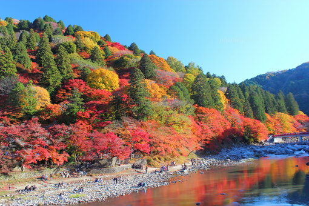
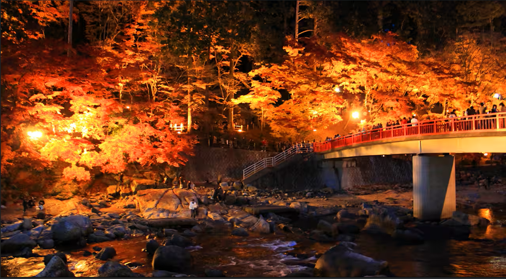
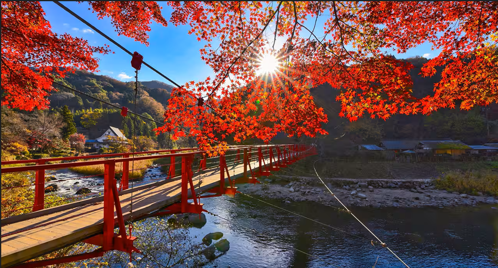
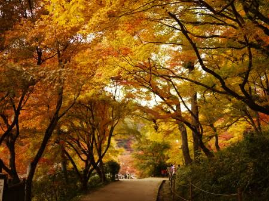

おすすめスポット
香嵐渓の絶景紅葉スポット
約4000本のカエデが染める、四百年の歴史ある紅葉の名所
1634年（寛永11年）、香積寺の三栄和尚が巴川から寺へと続く参道にカエデを植えたのが香嵐渓の始まりです。今では約4000本ものカエデが色づき、燃えるような赤色の景色が訪れる人々を魅了し続けています。

飯盛山
例年の見頃：11月中旬〜11月下旬
香嵐渓にそびえる標高約254mの小さな山。香積寺の参道が登山口となり、山頂までは約20分の手軽なハイキングコースです。麓に比べ人が少なく、静かに紅葉をじっくりと楽しめる穴場スポットです。

待月橋
例年の見頃：11月中旬〜11月下旬
巴川に架かる、香嵐渓のシンボルともいえる橋。橋の上からは紅葉に染まった飯盛山を一望でき、朱色の橋と山肌を染める紅葉が織りなす景色は必見です。俯瞰で眺める姿も人気があります。

香嵐橋
例年の見頃：11月中旬〜11月下旬
巴川の上流に架かる全長30mの赤い吊橋。橋の上は360度のパノラマが広がり、周囲を彩る色鮮やかな紅葉を存分に楽しめます。対岸には茶店「川見茶屋」や、バーベキュー＆バンガロー施設「足助村」もあり、あわせて立ち寄るのもおすすめです。

もみじのトンネル
例年の見頃：11月中旬〜11月下旬
香積寺への参道は、紅葉の季節になると左右の木々が錦色に染まり、まるでトンネルのような美しい光景に。人気のフォトスポットで、特に午後の西日に照らされると、道いっぱいに鮮やかな赤色が広がります。